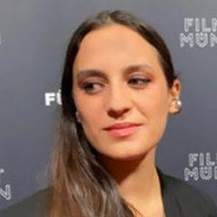
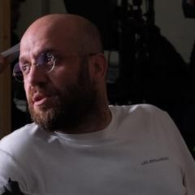
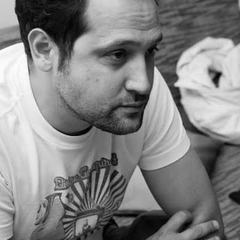
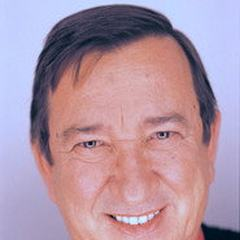
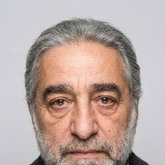
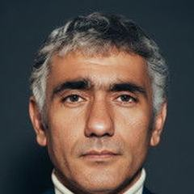
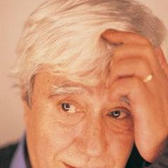

42 yönetmen
Türkiye
Türk sineması Birinci Dünya Savaşı öncesindeki kısa filmlerle başladı ve uzun süre tiyatrocuların elinde kaldı. 1950'ler ve 60'larda Yeşilçam, yılda yüzlerce melodram, komedi ve macera filmi üreten verimli bir endüstri oldu. Metin Erksan ve Yılmaz Güney gibi toplumcu gerçekçi ve politik yönetmenler öne çıktı; ancak sansür ve 1980 darbesi sektörü yıprattı. 1990'lardan beri yeni bir kuşak uluslararası festivallerde ödül kazanan bir yazar sineması kurdu.
6 büyük uluslararası ödül
2 Altın Palmiye4 Altın AyıÜnlü Yönetmenler
Ali ÖzelTürkiyeAtıf YılmazTürkiye Kutluğ AtamanTürkiyeLütfi Ömer AkadTürkiyeMemduh ÜnTürkiyeMetin ErksanTürkiyeMuzaffer ArslanTürkiye
Kutluğ AtamanTürkiyeLütfi Ömer AkadTürkiyeMemduh ÜnTürkiyeMetin ErksanTürkiyeMuzaffer ArslanTürkiye

Azra Deniz OkyayTürkiyeCanan GeredeTürkiyeDerviş ZaimTürkiyeEmin AlperTürkiyeErdem TepegözTürkiyeErden KıralTürkiyeErtem EğilmezTürkiyeFerzan ÖzpetekTürkiyeHalit RefiğTürkiyeKutluğ AtamanTürkiyeLütfi Ömer AkadTürkiyeMemduh ÜnTürkiyeMetin ErksanTürkiyeMuzaffer ArslanTürkiye
Necmi SancakTürkiyeNejat SaydamTürkiyeNuri Bilge CeylanTürkiyeOnur ÜnlüTürkiye
Ramin MatinTürkiyeReha ErdemTürkiyeSemih KaplanoğluTürkiyeSerdar AkarTürkiyeTüm 42 yönetmeni gör
Seren YüceTürkiyeSeyfettin TokmakTürkiyeSinan ÇetinTürkiyeTayfun PirselimoğluTürkiyeTolga KaraçelikTürkiye

Tunç BaşaranTürkiyeTunç OkanTürkiyeUğur YücelTürkiyeYavuz ÖzkanTürkiye
Yusuf KurçenliTürkiyeYılmaz DuruTürkiye
Yılmaz GüneyTürkiyeZeki DemirkubuzTürkiye
Zeki ÖktenTürkiyeÇiğdem VitrinelTürkiyeÖmer KavurTürkiyeÜmit KörekenTürkiyeŞerif GörenTürkiyeEn iyi filmler · 193 film
- Tosun Paşa 1976 · Ertem Eğilmez · IMDb 8,9
- Süt Kardeşler 1976 · Ertem Eğilmez · IMDb 8,8
- Neşeli Günler 1978 · Ertem Eğilmez · IMDb 8,7
- Gülen Gözler 1977 · Ertem Eğilmez · IMDb 8,4
- Sürü 1979 · Zeki Ökten · IMDb 8,1
- Çiçek Abbas 1982 · Ertem Eğilmez · IMDb 8,0
- Arabesk 1988 · Ertem Eğilmez · IMDb 8,0
- Kış Uykusu 2014 · Nuri Bilge Ceylan · IMDb 8,0
- Masumiyet 1997 · Zeki Demirkubuz · IMDb 8,0
- Yol 1982 · Yılmaz Güney · IMDb 7,9
- Umut 1970 · Yılmaz Güney · IMDb 7,9
- Duvar 1983 · Yılmaz Güney · IMDb 7,9
- Ah Güzel İstanbul 1966 · Atıf Yılmaz · IMDb 7,9
- Yüreğine Sor 2010 · Yusuf Kurçenli · IMDb 7,9
- Susuz Yaz 1963 · Metin Erksan · IMDb 7,8
- Bir Zamanlar Anadolu'da 2011 · Nuri Bilge Ceylan · IMDb 7,8
- Gemide 1999 · Serdar Akar · IMDb 7,8
- Gelin 1973 · Lütfi Ömer Akad · IMDb 7,7
- Gecelerin Ötesi 1960 · Metin Erksan · IMDb 7,7
- Aaahh Belinda 1986 · Atıf Yılmaz · IMDb 7,7
- Kuru Otlar Üstüne 2023 · Nuri Bilge Ceylan · IMDb 7,7
- Kader 2006 · Zeki Demirkubuz · IMDb 7,7
- Banker Bilo 1980 · Ertem Eğilmez · IMDb 7,6
- Tabutta Rövaşata 1996 · Derviş Zaim · IMDb 7,6
- Kuyu 1968 · Metin Erksan · IMDb 7,5
- Anayurt Oteli 1987 · Ömer Kavur · IMDb 7,5
- Bereketli Topraklar Üzerinde 1980 · Erden Kıral · IMDb 7,5
- Maden 1978 · Yavuz Özkan · IMDb 7,5
- Uzak 2002 · Nuri Bilge Ceylan · IMDb 7,5
- Kaç Para Kaç 1999 · Reha Erdem · IMDb 7,5
- Yusuf ile Kenan 1979 · Ömer Kavur · IMDb 7,4
- Hakkâri'de Bir Mevsim 1983 · Erden Kıral · IMDb 7,4
- Korkuyorum Anne 2004 · Reha Erdem · IMDb 7,4
- Kurak Günler 2022 · Emin Alper · IMDb 7,4
- Salako 1974 · Ertem Eğilmez · IMDb 7,3
- Otobüs 1974 · Tunç Okan · IMDb 7,3
- Üç Maymun 2008 · Nuri Bilge Ceylan · IMDb 7,3
- Üçüncü Sayfa 1999 · Zeki Demirkubuz · IMDb 7,3
- Le fate ignoranti 2001 · Ferzan Özpetek · IMDb 7,3
- Çoğunluk 2010 · Seren Yüce · IMDb 7,3
- Kelebekler 2018 · Tolga Karaçelik · IMDb 7,3
- Derman 1983 · Şerif Gören · IMDb 7,2
- Beş Vakit 2006 · Reha Erdem · IMDb 7,2
- Hayat Var 2008 · Reha Erdem · IMDb 7,2
- Jîn 2013 · Reha Erdem · IMDb 7,2
- La finestra di fronte 2003 · Ferzan Özpetek · IMDb 7,2
- Mine vaganti 2010 · Ferzan Özpetek · IMDb 7,2
- Düğün 1974 · Lütfi Ömer Akad · IMDb 7,1
- Diyet 1974 · Lütfi Ömer Akad · IMDb 7,1
- Gece Yolculuğu 1987 · Ömer Kavur · IMDb 7,1
- Akrebin Yolculuğu 1997 · Ömer Kavur · IMDb 7,1
- Propaganda 1999 · Sinan Çetin · IMDb 7,1
- Bal 2010 · Semih Kaplanoğlu · IMDb 7,1
- Abluka 2015 · Emin Alper · IMDb 7,1
- Arkadaş 1974 · Yılmaz Güney · IMDb 7,0
- Talih Kuşu 1988 · Atıf Yılmaz · IMDb 7,0
- Düşman 1979 · Zeki Ökten · IMDb 7,0
- Faize Hücum 1982 · Zeki Ökten · IMDb 7,0
- İklimler 2006 · Nuri Bilge Ceylan · IMDb 7,0
- Filler ve Çimen 2000 · Derviş Zaim · IMDb 7,0
- Kosmos 2010 · Reha Erdem · IMDb 7,0
- Bir Yudum Sevgi 1984 · Atıf Yılmaz · IMDb 6,9
- Gizli Yüz 1991 · Ömer Kavur · IMDb 6,9
- Kasaba 1997 · Nuri Bilge Ceylan · IMDb 6,9
- Gölgeler ve Suretler 2010 · Derviş Zaim · IMDb 6,9
- İtiraf 2001 · Zeki Demirkubuz · IMDb 6,9
- A Ay 1988 · Reha Erdem · IMDb 6,9
- Beş Şehir 2010 · Onur Ünlü · IMDb 6,9
- Endişe 1974 · Şerif Gören · IMDb 6,8
- Sen de Gitme 1995 · Tunç Başaran · IMDb 6,8
- Karartma Geceleri 1990 · Yusuf Kurçenli · IMDb 6,8
- Lola+Bilidikid 1998 · Kutluğ Ataman · IMDb 6,8
- Hamam 1997 · Ferzan Özpetek · IMDb 6,8
- Big Big World 2016 · Reha Erdem · IMDb 6,7
- Saturno contro 2007 · Ferzan Özpetek · IMDb 6,7
- La dea fortuna 2019 · Ferzan Özpetek · IMDb 6,7
- Mine 1982 · Atıf Yılmaz · IMDb 6,6
- Pehlivan 1984 · Zeki Ökten · IMDb 6,6
- Süt 2008 · Semih Kaplanoğlu · IMDb 6,6
- Kuzu 2014 · Kutluğ Ataman · IMDb 6,6
- Magnifica presenza 2012 · Ferzan Özpetek · IMDb 6,6
- Polis 2007 · Onur Ünlü · IMDb 6,6
- Mavi Bisiklet 2016 · Ümit Köreken · IMDb 6,6
- Herkes Kendi Evinde 2001 · Semih Kaplanoğlu · IMDb 6,5
- Yumurta 2007 · Semih Kaplanoğlu · IMDb 6,5
- Cenneti Beklerken 2006 · Derviş Zaim · IMDb 6,5
- Nokta 2007 · Derviş Zaim · IMDb 6,5
- Allacciate le cinture 2014 · Ferzan Özpetek · IMDb 6,5
- Çiçero 2019 · Serdar Akar · IMDb 6,5
- Fakat Müzeyyen Bu Derin Bir Tutku 2014 · Çiğdem Vitrinel · IMDb 6,5
- Zerre 2012 · Erdem Tepegöz · IMDb 6,5
- Körebe 1985 · Ömer Kavur · IMDb 6,4
- Un giorno perfetto 2008 · Ferzan Özpetek · IMDb 6,4
- Gişe Memuru 2010 · Tolga Karaçelik · IMDb 6,4
- Ayşe 2024 · Necmi Sancak · IMDb 6,4
- Vurun Kahpeye 1949 · Lütfi Ömer Akad · IMDb 6,3
- Kanal (1979) 1979 · Erden Kıral · IMDb 6,3
- Yengeç Sepeti 1994 · Yavuz Özkan · IMDb 6,3
- Büyük Öç 1970 · Yılmaz Duru · IMDb 6,3
- Cuore sacro 2005 · Ferzan Özpetek · IMDb 6,3
- Demiryol 1979 · Yavuz Özkan · IMDb 6,2
- Çözülmeler 1994 · Yusuf Kurçenli · IMDb 6,2
- Erkekler Ağlamaz 1964 · Yılmaz Duru · IMDb 6,2
- Ben O Değilim 2013 · Tayfun Pirselimoğlu · IMDb 6,2
- Kusursuzlar 2013 · Ramin Matin · IMDb 6,2
- Ve Recep Ve Zehra Ve Ayşe 1983 · Yusuf Kurçenli · IMDb 6,1
- Harem Suare 1999 · Ferzan Özpetek · IMDb 6,1
- Firar 1984 · Şerif Gören · IMDb 6,0
- Mavi Sürgün 1993 · Erden Kıral · IMDb 6,0
- Ateş Üstünde Yürümek 1991 · Yavuz Özkan · IMDb 6,0
- İnce Cumali 1968 · Yılmaz Duru · IMDb 6,0
- Zalimler 1967 · Yılmaz Duru · IMDb 6,0
- Buğday 2017 · Semih Kaplanoğlu · IMDb 6,0
- C Blok 1994 · Zeki Demirkubuz · IMDb 6,0
- Meleğin Düşüşü 2005 · Semih Kaplanoğlu · IMDb 5,9
- Kerr 2021 · Tayfun Pirselimoğlu · IMDb 5,9
- Hayaletler 2020 · Azra Deniz Okyay · IMDb 5,9
- Napoli velata 2017 · Ferzan Özpetek · IMDb 5,7
- Geriye Kalan 2011 · Çiğdem Vitrinel · IMDb 5,7
- Berlin in Berlin 1993 · Sinan Çetin · IMDb 5,5
- Pus 2009 · Tayfun Pirselimoğlu · IMDb 5,5
- Namusum İçin 1966 · Memduh Ün · IMDb 5,4
- Ankara Ekspresi 1970 · Muzaffer Arslan · IMDb 5,4
- 14 Numara 1985 · Sinan Çetin · IMDb 5,3
- Çamur 2003 · Derviş Zaim · IMDb 5,3
- Bir Günün Hikayesi 1980 · Şerif Gören · IMDb 5,2
- Kalbimin Efendisi 1970 · Ertem Eğilmez · IMDb 5,2
- Umut Üzümleri 2013 · Tunç Okan · IMDb 5,2
- Maruf 2001 · Serdar Akar · IMDb 5,2
- Aşk Ölümden Soğuktur 1995 · Canan Gerede · IMDb 4,9
- Celal Tan ve Ailesinin Aşırı Acıklı Hikayesi 2011 · Onur Ünlü
- Hanım 1988 · Halit Refiğ
- Dar Alanda Kısa Paslaşmalar 2000 · Serdar Akar
- Bekleme Odası 2004 · Zeki Demirkubuz
- Parçalanma 1999 · Canan Gerede
- Adı Vasfiye 1985 · Atıf Yılmaz
- Çöpçüler Kralı 1977 · Ertem Eğilmez
- Peçenin Ardındaki Kadınlar 1993 · Canan Gerede
- Sevmek Zamanı 1965 · Metin Erksan
- Yazgı 2001 · Zeki Demirkubuz
- Bulantı 2015 · Zeki Demirkubuz
- Av Zamanı 1988 · Erden Kıral
- Karılar Koğuşu 1989 · Halit Refiğ
- Haremde Dört Kadın 1965 · Halit Refiğ
- Keşanlı Ali Destanı 1964 · Atıf Yılmaz
- Behzat Ç. Ankara Yanıyor 2013 · Serdar Akar
- Hudutların Kanunu 1966 · Lütfi Ömer Akad
- Acı Kiraz 2020 · Serdar Akar
- Şaşkın Ördek 1975 · Ertem Eğilmez
- Kıskanmak 2009 · Zeki Demirkubuz
- Kadının Adı Yok 1975 · Atıf Yılmaz
- Kapıcılar Kralı 1976 · Zeki Ökten
- Piyano Piyano Bacaksız 1990 · Tunç Başaran
- Psycho Therapy 2024 · Tolga Karaçelik
- Acı 1971 · Yılmaz Güney
- Bin Yıllık Yol 1969 · Yılmaz Duru
- Karanlık Sular 1994 · Kutluğ Ataman
- Amansız Yol 1985 · Ömer Kavur
- Dinmeyen Sızı 1973 · Nejat Saydam
- Seyyit Han 1968 · Yılmaz Güney
- Ayna 1984 · Erden Kıral
- İki Genç Kız 2005 · Kutluğ Ataman
- Fikrimin İnce Gülü - Sarı Mercedes 1992 · Tunç Okan
- Hababam Sınıfı 1975 · Ertem Eğilmez
- Sen Aydınlatırsın Geceyi 2013 · Onur Ünlü
- Ağıt 1972 · Yılmaz Güney
- Aya Yolculuk 2009 · Kutluğ Ataman
- Rıza 2006 · Tayfun Pirselimoğlu
- Uçurtmayı Vurmasınlar 1989 · Tunç Başaran
- Yeraltı 2012 · Zeki Demirkubuz
- Yazı Tura 2004 · Uğur Yücel
- Rosso Istanbul 2017 · Ferzan Özpetek
- Şehirdeki Yabancı 1962 · Halit Refiğ
- Kanun Namına 1952 · Lütfi Ömer Akad
- Mayıs Sıkıntısı 1999 · Nuri Bilge Ceylan
- Bozkır 2019 · Ali Özel
- Selvi Boylum, Al Yazmalım 1977 · Atıf Yılmaz
- Kızgın Toprak 1973 · Metin Erksan
- Cumartesi Cumartesi 1984 · Tunç Okan
- Sarmaşık 2015 · Tolga Karaçelik
- Bir Avuç Cennet 1987 · Sinan Çetin
- Tavşan İmparatorluğu 2024 · Seyfettin Tokmak
- Gurbet Kuşları 1964 · Halit Refiğ
- Kara Doğan 1972 · Yılmaz Duru
- Çemberler 2000 · Yusuf Kurçenli
- Ahlat Ağacı 2018 · Nuri Bilge Ceylan
- Robert'in Filmi 1991 · Canan Gerede
- Dünden Sonra Yarından Önce 1987 · Atıf Yılmaz
- Kız Kardeşler 2019 · Emin Alper
- Tepenin Ardı 2012 · Emin Alper
- İtirazım Var 2014 · Onur Ünlü
- Karşılaşma 2007 · Ömer Kavur
- Kırık Bir Aşk Hikayesi 1981 · Ömer Kavur